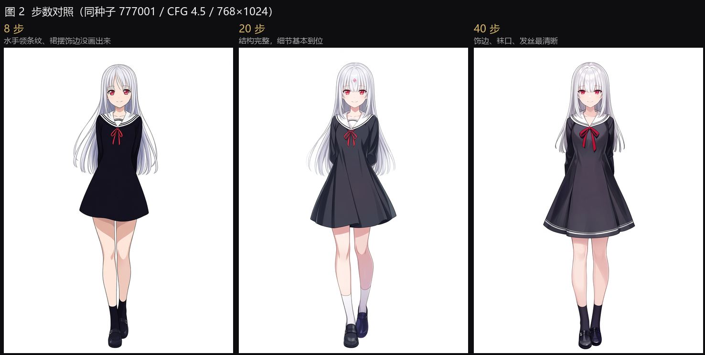
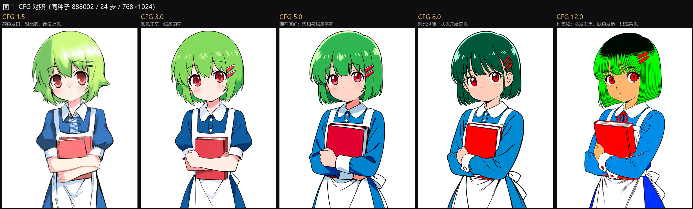
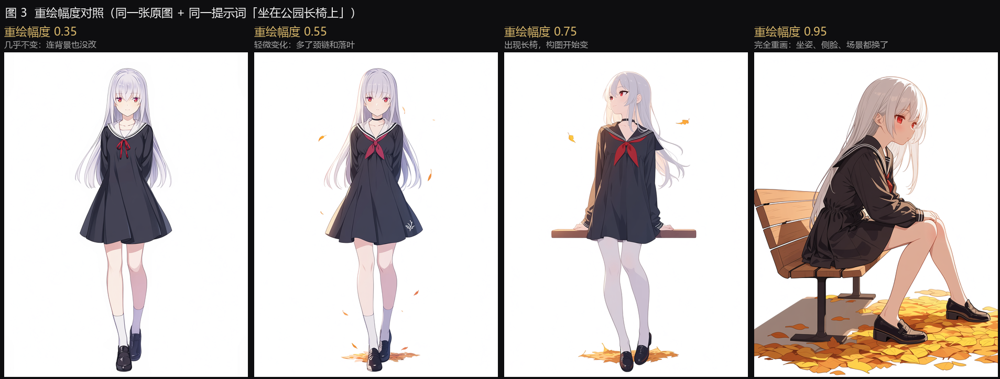

从装好软件到调好每一个参数。所有示例图都是本软件在本机生成的，种子与参数写在图注里，可以照着重现。
双击桌面图标后，软件会自动检查并部署运行环境（ComfyUI、Python、Anima 基础模型、Qwen3 文本编码器、VAE）。首次约 5–15 分钟，取决于硬盘和网速；进度条会写清每一步在装什么。
启动完成后左下角会显示版本号。所有生成都在本机完成，不联网、不上传；断网也能用。
| 页面 | 用途 | 什么时候用 |
|---|---|---|
| 01 创作 | 主界面：提示词、参数、参考图、生成 | 90% 的时间在这 |
| 作品 | 历史结果、放大查看、隐藏、批量高清化 | 挑图、找回旧图 |
| 高清化 | 把任意图片放大变清晰 | 出图满意但要更大更清楚 |
| 参考库 | 你导入的姿势 / 服装 / 角色参考 | 想要特定动作或穿搭 |
| LoRA | 风格与角色插件管理 | 想要固定画风或特定角色 |
| 设置 | 模型路径、性能、LLM 开关 | 换模型、调显存策略 |
1girl, silver hair, red eyes, black sailor dress, standing, simple white background1girl, solo 才是单人。软件会自动加单人约束并在出图后数人，但你自己写上最稳。
按这个顺序写，模型最容易理解：
质量前缀 → 人数与主体 → 角色特征 → 动作/表情 → 服装 → 镜头与场景 → 光线 → 画风示例：
masterpiece, best quality, ultra detailed, very aesthetic,
1girl, solo, silver hair, long hair, red eyes,
standing, hands behind back, gentle smile, looking at viewer,
black sailor dress, white collar, red ribbon,
full body, vertical composition, from front,
simple white background, soft studio lighting,
clean lineart, detailed eyes1girl, solo：人形单人必写；非人形（宝可梦、怪物）只写 solo + 对象名，不要写 1girl。silver hair、red eyes，不要写成 hair silver。worst quality, low quality, blurry, bad anatomy, bad hands, extra fingers, 2girls, multiple girls。步数是去噪迭代次数。步数太少，细节来不及成型；到一定程度再加就只是浪费时间。

| 步数 | 效果 | 耗时 | 建议 |
|---|---|---|---|
| 6–10 | 构图验证，细节缺失 | 最快 | 试提示词、试构图 |
| 18–24 | 细节基本到位 | 中 | 日常主力 |
| 30–40 | 纹理、边缘更干净 | 约 1.5–2 倍 | 成图、放大前的底图 |
| 50+ | 提升极小 | 很慢 | 不建议 |
CFG（Classifier-Free Guidance）控制「多听提示词」。太低不听指挥，太高会为了满足提示词而硬凑，导致过饱和、脏色、崩坏。

| CFG | 表现 | 适用 |
|---|---|---|
| 1.0–2.5 | 画面柔和、发灰，提示词约束弱 | 几乎不用 |
| 3.5–5.5 | 忠实且自然 | 推荐区间（Anima 默认 4.5） |
| 6–8 | 对比强、颜色硬 | 想要浓烈风格时 |
| 9+ | 过曝、脏色、崩细节 | 避免 |
只在「以图生图」时有意义（参考图、局部修正、高清修复的重绘幅度都是它）。0 = 完全不动，1 = 完全重画。

| 重绘幅度 | 用途 |
|---|---|
| 0.20–0.40 | 修纹理、加细节，构图与角色完全保留 |
| 0.45–0.60 | 换衣服 / 换表情 / 换背景，人物还是那个人 |
| 0.65–0.80 | 换动作 / 换镜头 |
| 0.85–0.95 | 只借构图，角色重画 |
种子决定「随机数起点」。同一提示词 + 同一参数 + 同一种子 = 同一张图。
-1 / 留空：每张都随机。| 项 | 含义 | 建议 |
|---|---|---|
| 采样器 | 去噪的算法 | 默认 er_sde（Anima 最稳）；想要更锐利可试 euler_a |
| 调度器 | 每步去噪强度的安排 | 默认 simple；karras 细节更多但更慢 |
不确定就别动。这两个更多影响「手感」，不如 CFG 和步数影响直观。
在生成后追加一次放大 + 低幅度重绘，用少量时间换来明显更细的线条与皮肤过渡。
如果只想「更大更清楚、什么都别变」，用第 15 节的「高清化」，它是纯放大模型，不重画。
LoRA 是小体积的「外挂权重」，可以让模型学会特定画风或特定角色。
| 槽位 | 作用 | 推荐重绘幅度 |
|---|---|---|
| 构图参考 | 照搬动作、机位、画面结构 | 0.55–0.75 |
| 角色参考 | 照搬发色、瞳色、服装 | 0.45–0.65 |
| 质感参考 | 照搬上色与光影质感 | 0.35–0.55 |
作品详情页点「局部修正」，在图上框选要改的区域。
输出会是新文件（-fix.png），原图保留。
「高清化」页：选一张图 → 选放大模型 → 选倍数 → 开始。它只放大和补细节，不会改变角色、风格、构图。
| 模型 | 适合 |
|---|---|
| Real-ESRGAN anime 6B | 动漫 / 二次元（推荐首选） |
| Real-ESRGAN x4plus | 照片、写实、复杂纹理 |
| Real-ESRGAN x2plus | 只想放大 2 倍、不要过度锐化 |
| Lanczos | 兜底：没装模型时的纯插值 |
如果模型缺失，页面会提示一键安装（约 150 MB）。放大后的文件命名 xxx-hd4x.png，并保留原图的提示词与种子信息。
点「AI 写提示词」，用中文描述你要的画面，例如：
我想画原神里的刻晴，站在树下叉腰，2.5D 厚涂风格它会输出结构化的七项：角色、作品、画风、画师、正向提示词、负向提示词、说明。然后点「填入创作区」。
keqing、souryuu asuka langley）。中文名已收录 3000+，但日文音译名可能识别不到。| 环节 | 做什么 | 能否关闭 |
|---|---|---|
| 加载模型 | Anima + Qwen3 文本编码器 + VAE | 否（必需） |
| 文本编码 | 提示词转成模型能读的向量 | 否 |
| 采样 | 按步数 / CFG / 采样器去噪 | 否 |
| 高清修复 | 放大 + 低幅度重绘 | 是（默认关） |
| 参考图注入 | 构图 / 角色 / 质感 | 是（不挂就是关） |
| LoRA | 风格 / 角色权重 | 是 |
| 单人校验 | 出图后数人，>1 自动重跑 | 否（可忽略失败） |
| 自动高清化 | 出图后自动放大并替换 | 是（默认关） |
| 局部修正 | 事后修复 / 擦除 | 是（手动触发） |
| NSFW 工作流 | 本地无内容限制；关闭则强制 safe | 是（默认开） |
| 现象 | 原因 | 处理 |
|---|---|---|
| 画面出现多个人 | 提示词没写 solo / 参考图多人 | 写 1girl, solo；参考图先「裁单人」；软件会自动数人重跑 |
| 脚趾数量不对 | 小区域结构最难 | 提示词加 detailed toes, five toes per foot；或局部修正框住脚 |
| 手指粘连 | 手部小且互相遮挡 | 负面加 extra fingers, fused fingers；局部修正重绘手 |
| 颜色发白 / 灰 | CFG 太低 | CFG 提到 4.5–5.5 |
| 颜色脏、皮肤橙 | CFG 太高 | CFG 降到 5 以下 |
| 整体糊 | 步数太少或分辨率太低 | 步数 24+，或出图后高清化 |
| 画风被带偏 | LoRA / 参考图强度过高 | LoRA 降到 0.7，参考重绘幅度降 0.1 |
| 姿势和参考图不像 | 重绘幅度太高 | 降到 0.55 左右 |
| 出图很慢 | CPU 模式 / 步数高 / 分辨率高 | 先 8 步定构图，再 24 步出图 |
| 参数 | 默认 | 推荐范围 | 一句话 |
|---|---|---|---|
| 步数 | 30 | 18–30 | 画多少笔 |
| CFG | 4.5 | 3.5–5.5 | 听不听话 |
| 种子 | 随机 | 固定以复现 | 随机起点 |
| 分辨率 | 832×1216 | 832–1216 | 越大越慢，别超 1280 |
| 批量 | 1 | 1–4 | 一次出几张 |
| 重绘幅度 | — | 0.35–0.75 | 改多少 |
| LoRA 强度 | 0.75 | 0.6–0.8 | 外挂权重浓度 |
| 高清化倍数 | 4× | 2×–4× | 放大几倍 |
「启用 NSFW 工作流」打开时，创作页会多出一个标签面板。里面按 人数与关系 / 体型与特征 / 服装 / 动作与姿势 / 表情与状态 / 场景与光线 / 镜头与画质 分组，共 130+ 个中文标签，点一下就会把对应英文标签追加到提示词。
cat ears。